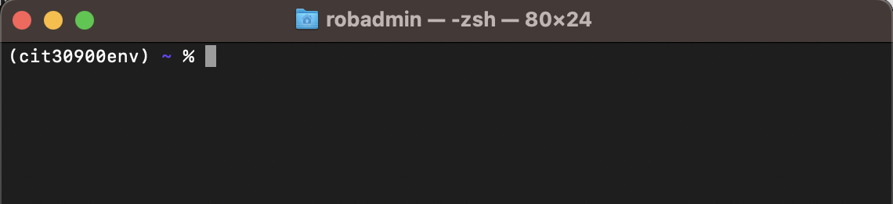

Creating a Development Environment on a Mac#
Install Homebrew
Use Homebrew to Install Python
brew unlink python
brew link –overwrite python
cd /usr/local/bin
ln -s python3 python
ln -s pip3 pip
Creating a Development Environment on a Mac#
Follow the steps below to install the software you will need for this course.
These commands should work on all modern Mac computers. Some commands may be slightly different depending on the processor your Mac has (Intel or Apple Silicon). When necessary, use the instructions that match your processor.
Important
You will need to know the administrator username and password for your computer for some of these installations!
Steps to set up your development environment:
Install Homebrew#
Homebrew is a package manager for Mac computers. It helps you install, update, and uninstall system software.
Open a new Terminal window
Copy and paste the following command into the Terminal window
/bin/bash -c "$(curl -fsSL https://raw.githubusercontent.com/Homebrew/install/master/install.sh)"
Input your administrative password when asked
Important
After installing Homebrew, READ THE MESSAGES PROVIDED. The installer will give you two commands that you should copy and paste into the Terminal window.
The first command will start with:
(echo; echo 'eval "$(/usr/local/bin/brew shellenv)"') >> ...
The second will look like:
eval "$(/usr/local/bin/brew shellenv)"
The specific commands will differ based on your individual computer. Please read the feedback and execute the commands provided.
Use Homebrew to Install Python#
Open a new Terminal window
Copy and paste the following command into the Terminal window
brew install python
Important
After installing Python, you should restart your shell. Copy and paste the following command into the Terminal window:
source ~/.zshrc
This installation also installed Pip, which is a Python package manager. We’ll use Pip to install additional Python libraries throughout the semester.
Add Shortcuts to Python and Pip#
You now have Python installed and can run Python by using the command python3 at a Terminal prompt.
You will create shortcuts so that the keyword python will execute python3, and the keyword pip will execute pip3.
Open a Terminal on your computer
Copy and paste EACH of the following commands into your Terminal (one at a time)
brew unlink pythonbrew link --overwrite pythoncd /usr/local/binln -s python3 pythonln -s pip3 pip
Install virtualenv#
You will create a virtual environment to use in this course. This environment will manage all the Python packages that are installed throughout the course so that you can easily uninstall them all later if needed.
Open a Terminal on your computer
Copy and paste the following command to install virtualenv:
pip install virtualenv
Install virtualenvwrapper#
You’ll also install a helper package that simplifies many of the commands related to your virtual environment.
Open a Terminal on your computer
Copy and paste the following command to install virtualenvwrapper:
pip install virtualenvwrapper
Once virtualenvwrapper is installed, copy and paste EACH of the following commands in the Terminal window (one at a time):
export WORKON_HOME=$HOME/.envssource /usr/local/bin/virtualenvwrapper.sh
Create a Virtual Environment#
Use virtualenvwrapper to create a new virtual environment for this course.
Open a Terminal on your computer
Use the following command to create a virtual environment named
cit30900env:
mkvirtualenv cit30900env
The previous command created and activated your virtual environment. You will know that your environment is activated because its name appears in parentheses before your command prompt in the terminal window. See the example below:
Create a Root Directory#
You will create a directory that you will use as your root directory for this course. This directory can be anywhere on your computer. We will refer to your root directory through the remainder of the semester.
Important
File management is going to be extremely important in this course! Please be aware of the specific file and directory paths that are used
Use Homebrew to Install Git#
Open a Terminal on your computer
Use the following command to install Git:
brew install git
Install Visual Studio Code#
I strongly recommend that you use Visual Studio Code as your IDE for this course. All tutorials and examples will use VS Code, and functionality of the IDE will be referred to frequently.
Visual Studio Code is a different software package than “Visual Studio”. VS Code is free and open source.